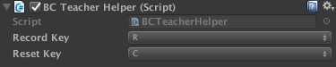

Imitation Learning
It is often more intuitive to simply demonstrate the behavior we want an agent to perform, rather than attempting to have it learn via trial-and-error methods. Consider our running example of training a medic NPC : instead of indirectly training a medic with the help of a reward function, we can give the medic real world examples of observations from the game and actions from a game controller to guide the medic's behavior. More specifically, in this mode, the Brain type during training is set to Player and all the actions performed with the controller (in addition to the agent observations) will be recorded and sent to the Python API. The imitation learning algorithm will then use these pairs of observations and actions from the human player to learn a policy.
Using Behavioral Cloning
There are a variety of possible imitation learning algorithms which can be used, the simplest one of them is Behavioral Cloning. It works by collecting training data from a teacher, and then simply uses it to directly learn a policy, in the same way the supervised learning for image classification or other traditional Machine Learning tasks work.
- In order to use imitation learning in a scene, the first thing you will need is to create two Brains, one which will be the "Teacher," and the other which will be the "Student." We will assume that the names of the brain
GameObjects are "Teacher" and "Student" respectively. - Set the "Teacher" brain to Player mode, and properly configure the inputs to map to the corresponding actions. Ensure that "Broadcast" is checked within the Brain inspector window.
- Set the "Student" brain to External mode.
- Link the brains to the desired agents (one agent as the teacher and at least one agent as a student).
- Build the Unity executable for your desired platform.
- In
trainer_config.yaml, add an entry for the "Student" brain. Set thetrainerparameter of this entry toimitation, and thebrain_to_imitateparameter to the name of the teacher brain: "Teacher". Additionally, setbatches_per_epoch, which controls how much training to do each moment. Increase themax_stepsoption if you'd like to keep training the agents for a longer period of time. - Launch the training process with
python3 python/learn.py <env_name> --train --slow, where<env_name>is the path to your built Unity executable. - From the Unity window, control the agent with the Teacher brain by providing "teacher demonstrations" of the behavior you would like to see.
- Watch as the agent(s) with the student brain attached begin to behave similarly to the demonstrations.
- Once the Student agents are exhibiting the desired behavior, end the training process with
CTL+Cfrom the command line. - Move the resulting
*.bytesfile into theTFModelssubdirectory of the Assets folder (or a subdirectory within Assets of your choosing) , and use withInternalbrain.
BC Teacher Helper
We provide a convenience utility, BC Teacher Helper component that you can add to the Teacher Agent.

This utility enables you to use keyboard shortcuts to do the following:
To start and stop recording experiences. This is useful in case you'd like to interact with the game but not have the agents learn from these interactions. The default command to toggle this is to press
Ron the keyboard.Reset the training buffer. This enables you to instruct the agents to forget their buffer of recent experiences. This is useful if you'd like to get them to quickly learn a new behavior. The default command to reset the buffer is to press
Con the keyboard.